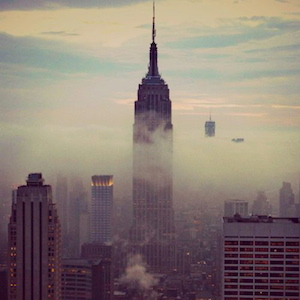
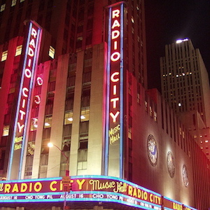
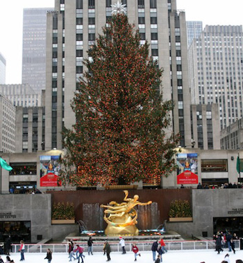
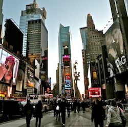
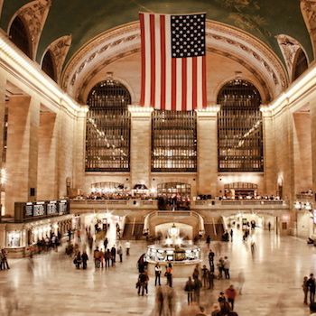

Empire State Building
The Empire State Building is generally thought of as an American cultural icon. It is designed in the distinctive Art Deco style and has been named as one of the Seven Wonders of the Modern World by the American Society of Civil Engineers. The building and its street floor interior are designated landmarks of the New York City Landmarks Preservation Commission, and confirmed by the New York City Board of Estimate. It was designated as a National Historic Landmark in 1986. In 2007, it was ranked number one on the List of America's Favorite Architecture according to the AIA.
Radio City Music Hall
Radio City Music Hall is an entertainment venue located in Rockefeller Center in New York City. Its nickname is the Showplace of the Nation, and it was for a time the leading tourist destination in the city. Its interior was declared a city landmark in 1978.
Rockefeller Center
Rockefeller Center is a complex of 19 commercial buildings covering 22 acres (89,000 m2) between 48th and 51st streets in New York City, United States. Built by the Rockefeller family, it is located in the center of Midtown Manhattan, spanning the area between Fifth Avenue and Sixth Avenue. It was declared a National Historic Landmark in 1987
Times Square
Times Square — iconified as "The Crossroads of the World", "The Center of the Universe", and the "The Great White Way" — is the brightly illuminated hub of the Broadway Theater District. Times Square is the world's most visited tourist attraction, hosting over 39 million visitors annually. Approximately a third of a million people pass through Times Square daily.
Grand Central Station
Grand Central Station is a commuter (and former intercity) railroad terminal at 42nd Street and Park Avenue in Midtown Manhattan in New York City, United States. Built by and named for the New York Central Railroad in the heyday of American long-distance passenger rail travel, it is the largest such facility in the world by number of platforms with 44 serving 67 tracks along them.
Tiffany & Co.
The world-renowned Tiffany & Co. store at the corner of Fifth Avenue and 57th Street opened its doors for business on October 21, 1940. The granite and limestone building, with Art Deco influences and stainless steel doors, is adorned with a nine-foot bronzed figure of Atlas shouldering a clock. It is simply the most famous store there is. Every cab driver, every New Yorker, every visitor knows where to find Tiffany & Co.
The Chrysler Building
The Chrysler Building is an Art Deco style skyscraper in New York City, located on the east side of Manhattan in the Turtle Bay area at the intersection of 42nd Street and Lexington Avenue. At 1,046 feet , the structure was the world's tallest building for 11 months before it was surpassed by the Empire State Building in 1931. It is still the tallest brick building in the world, albeit with an internal steel skeleton.
Bergdorf Goodman
Bergdorf Goodman is a luxury goods department store based on Fifth Avenue in Midtown Manhattan in New York City. The company was founded in 1899 by Herman Bergdorf and was later owned and managed by Edwin Goodman, and later his son Andrew Goodman.
Madison Square Garden
Madison Square Garden is a multi-purpose indoor arena in midtown Manhattan in New York City. Located between Seventh and Eighth Avenues from 31st to 33rd Streets, it is situated atop Pennsylvania Station. The Garden is used for professional basketball and ice hockey, as well as boxing, concerts, ice shows, circuses, and other forms of sports and entertainment.